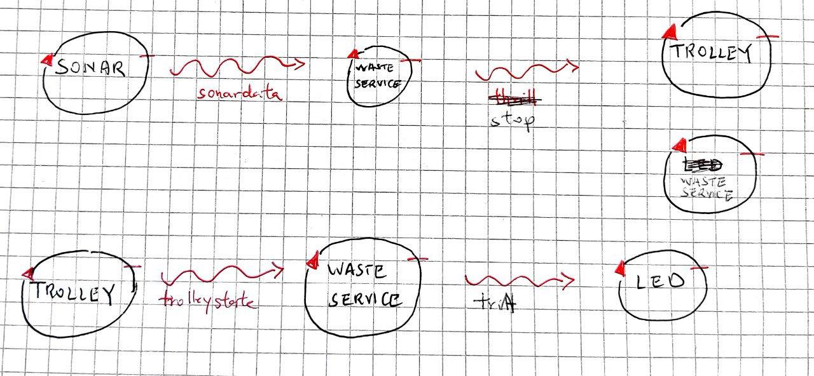
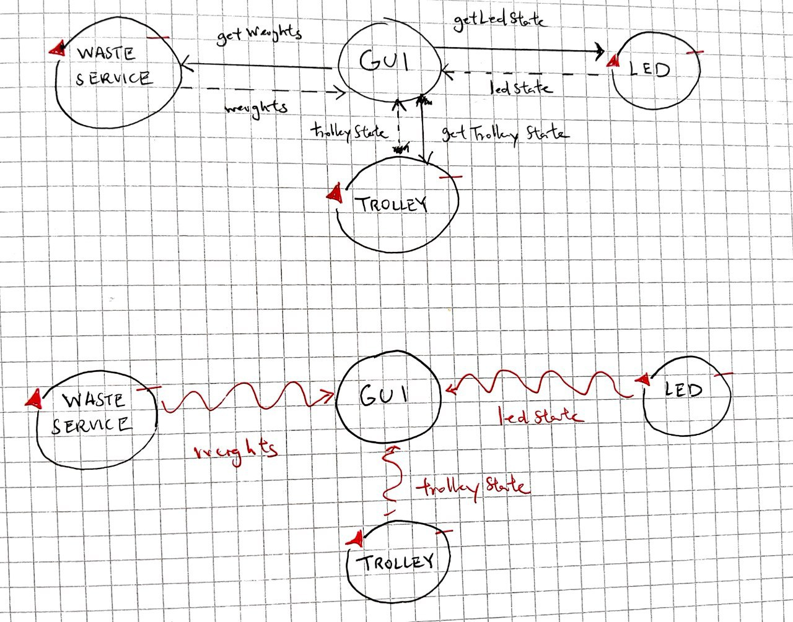

Introduction
Tema finale corso di studio Ingegneria dei sistemi software, Laurea Magistrale Università di Bologna
Requirements
A company intends to build a WasteService for the separate collection of waste, composed of a set of elements:
a service area (rectangular, flat) that includes:
an INDOOR port, to enter waste material
a PlasticBox container, devoted to store objects made of plastic, upto MAXPB kg of material.
a GlassBox container, devoted to store objects made of glass, upto MAXGB kg of material.
The service area is free from internal obstacles, as shown in the following picture:

a DDR robot working as a transport trolley, that is intially situated in its HOME location. The transport trolley has the form of a square of side length RD.
The transport trolley is used to performa a deposit action that consists in the following phases:
pick up a waste-load from a Waste truck located on the INDOOR
go from the INDOOR to the proper waste container
deposit the waste-load in the container
a Service-manager (an human being) which supervises the state of the service-area by using a WasteServiceStatusGUI.
a Sonar and a Led connected to a RaspnerryPi. The Led is used as a warning devices, according to the following scheme:
the Led is off when the transport trolley is at HOME
the Led blinks while the transport trolley is moving
the Led is on when transport trolley is stopped.
The Sonar is used as an ‘alarm device’: when it measures a distance less that a prefixed value DLIMT, the transport trolley must be stopped. It will be resumed when Sonar detects again a distance higher than DLIMT.
TFRequirements
The main goal of the WasteService software is to allow a Waste truck to deposit its load of TruckLoad kg plastic or glass in the proper container.
The global story can be described as follows:
The Waste truck driver approaches the INDOOR and sends (using a smart device) a request to store the load, by specifyng the type of the material (plastic or glass) and its TruckLoad.
The WasteService sends the answer loadaccept if the final content of proper container will not surpass the maximum value allowed (MAXPB or MAXGB). Otherwise, it sends the answer loadrejecetd and the Waste truck leaves the INDOOR area.
When the load is accepted, the transport trolley reaches the INDOOR, picks up the material, goes to the proper container and settles the material. During this activity, the WasteService blinks the Led
When the deposit action is terminated, the transport trolley excutes another deposit command (if any) or returns to its HOME.
The WasteService must create a WasteServiceStatusGUI that shows to the Service-manager:
the current state of the transport trolley and it position in the room
the current weigth of the material stored in the two waste-containers
the current state of the Led
Requirement analysis
Dopo una prima analisi del testo dei requisiti, sono emersi alcuni punti non chiari
dei quali è stato richiesto chiarimenti verso il committente.
Riportando in seguito
- Possono più WASTE_TRUCK arrivare nello stesso momento all'interno del sistema? oppure entra uno solo quando quello precedente ha liberato INDOOR?
- r1: I truck possono arrivare uno solo alla volta e con loro anche i messaggi di richiesta.
- r2: Però un messaggio di richiesta potrebbe arrivare mentre il Trolley sta scaricando
- In caso di load_accepted il WASTE_TRUCK libera INDOOR subito dopo che il TROLLEY ha prelevato il carico?
- Si, per cui vale la r2
- La WAIT-SERVICE considera il volume dei contenitori attualmente disponibili oppure è impossibile che il TROLLEY non compia il suo carico, quindi in caso di TROLLEY in transito, assieme al volume dei contenitori viene considerato anche il peso del carico in transito?
- Per rispondere positivamente a una richiesta di deposito mentre il trolley sta scaricando, deve essere considerato anche il carico in transito, come se fosse già stato depositato
- LED che è accesso quando il TROLLEY È STOPPED : inteso quando fermato a causa del sonar? oppure anche davanti ai contenitori per scaricare il carico?
- Solo a causa del sonar
-
Se il trolley è in posizione HOME e il sonar rileva una distanza minore di DLIMIT, in che stato vuole che sia il LED?
- Il Led deve essere off. Deve diventare on se il Trolley deve muoversi ma il sonar rileva una distanza < DLIMT
Tramite la seguente tabella identifico in che stato deve essere il led
| TROLLEY \ SONAR | MINORE DLIMIT | MAGGIORE DLIMIT |
|---|---|---|
| HOME | LED OFF | LED OFF |
| WORKING | LED ON | LED BLINK |
Posso dividere il problema proposto in 3 requisiti funzionali distinti
base functionality
ad Waste_Service viene comunicato il carico arrivato, a sua discrezione accetta o meno il carico ed incarica il TROLLEY. Il TROLLEY comunica al WASTE_TRUCK e al Waste_Service dopo che ha prelevato il carico; Dopo che ha scaricato il carico, chiede al Waste_Service se c'è un altro incarico
- risposta positiva : si sposta direttamente ad INDOOR
- risposta negativa : si sposta ad HOME
stop-resume-notify
l TROLLEY si ferma quando il SONAR rileva una distanza minore di DLIMIT, e riprende l'esecuzione quando viene rilevata una distanza maggiore.
Il LED codifica lo stato del TROLLEY
- acceso, bloccato dal sonar
- spento, home
- lampeggiante, in operazione
gui tracker
disporre di una GUI che mostra
- stato del trolley
- peso corrente nei containers
- stato del led
Problem analysis
Per ognuno dei requisiti funzionali mostro l'architettura logica separata, in modo da raggruppare semanticamente le interazioni
base functionality
stop-resume-notify
gui tracker
Contesti
- servizio : Waste_Service, Trolley
- sensori : Led, Sonar
- esterno_1 : Gui
- esterno_2 : Waste_Truck
- esterno_3 : Wenv / robot fisico
Responsabilità di Waste Service
Notiamo che l'entità ora denominata Waste_Service ha molteplici responsabilità
- Riferimento per tutti i Waste_Truck che interagiscono con il sistema
- Possedere (e notificare) informazioni riguardante alla capacità dei due containers
- Interpretare gli eventi del sonar , e a sua discrezione emettere a sua volta eventi
- Interpretare gli eventi del trolley , e a sua discrezione emettere a sua volta eventi
- Unico riferimento per il trolley
Suggerimenti per progettazione
Il Waste_Service sarebbe conveniente se venisse separato in più componenti interagenti tra loro, ciascuno avente una o più responsabilità di quelle sopra citate
Il Trolley si individuano anche in esso più responsabilità
- ricerca del percorso
- interazione con il sistema in progettazione
- interazione con il robot virtuale / reale
Architettura Logica: modello eseguibile
base functionality
- download
- path : src/test_1.qak
- fsm trolley
- fsm waste service
Test plans
base functionality
| TRUCK REQUEST | EXPECTED | |
|---|---|---|
| 1. VETRO 2 | ---> | ACCETTATO |
| 2. VETRO,3 subito dopo carico | ---> | ACCETTATO, TROLLEY NON PASSA DA HOME |
| 3. VETRO,2 aspetta un po' | ---> | ACCETTATO, TROLLEY RIMANE PER UN PO' DA HOME |
| 4. VETRO, 5 ininfluente | ---> | NON ACCETTATO |
| 5. PLASTICA, 3 ininfluente | ---> | ACCETTATO |
| 6. VETRO, 2 ininfluente | ---> | ACCETTATO |
Project
gui tracker
La notifica pensata per agenti esterni (GUI che necessita di peso dei containers, stato del trolley e stato del led), si può pensare a sfruttare gli attori come COAP resources